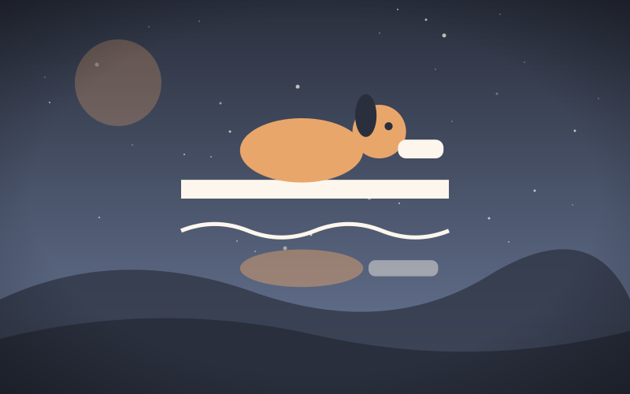

The Dog and the Shadow
Genre: Drama
Synopsis
A dog crossing a bridge with a piece of meat sees another dog in the water with a bigger piece.
Chapter 1: The Dog and the Shadow

A Dog, crossing a bridge over a stream with a piece of flesh in his mouth, saw his own shadow in the water and took it for that of another Dog, with a piece of meat double his own in size. He immediately let go of his own, and fiercely attacked the other Dog to get his larger piece from him. He thus lost both: that which he grasped at in the water, because it was a shadow; and his own, because the stream swept it away.